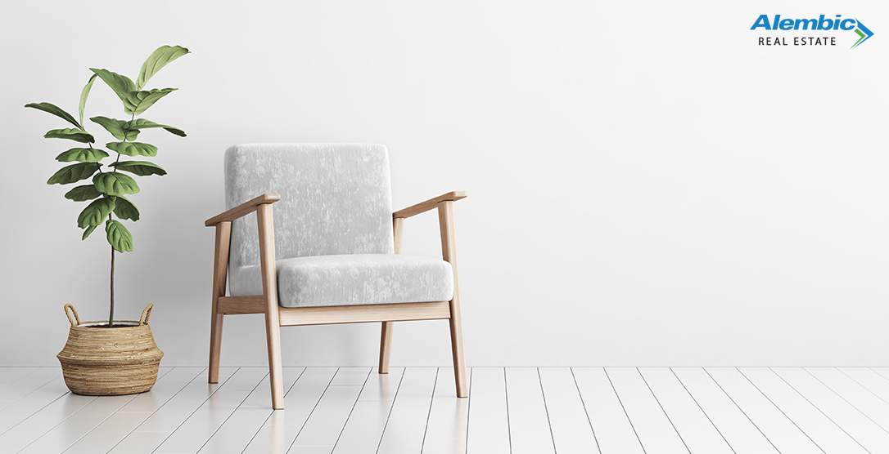

Finding simplicity in life
July 5, 2022 | 3 Comments
Our lives were suddenly turned upside down by a world pandemic. We had no control, and our power of choice was taken away from us. To survive we had to accept and obey the laws set by the government to eliminate a virus that could potentially destroy our society as we know it.
CONTINUE READING